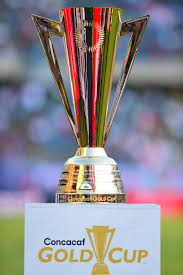
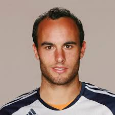
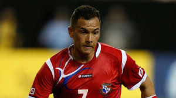
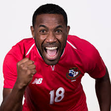
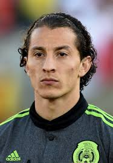
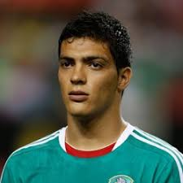
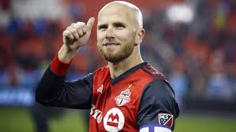
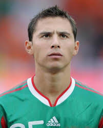
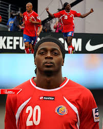

Gold Cup
The CONCACAF Gold Cup is the main football competition of national teams from North America, Central America, and the Caribbean.
Gold Cup Trophy
Facts About the Gold Cup
- Founded: 1991
- Number of Teams: 16
- Most Titles: Mexico (11 titles)
- Most Appearances: Andrés Guardado (24 appearances)
Top 5 Gold Cup Goal Scorers
-  Landon Donovan – 18 goals
-  Blas Pérez – 12 goals
-  Luiz Tejada – 12 goals
-  Andrés Guardado – 12 goals
-  Raúl Jiménez – 10 goals
Top 5 Gold Cup Assist Providers
- Landon Donovan – 10 assists
-  Michael Bradley – 9 assists
- Andrés Guardado – 8 assists
-  Paul Aguilar – 6 assists
-  Dennis Marshall – 5 assists
Top Teams with Most Gold Cup Titles
 Mexico – 11 titles
Mexico – 11 titles USA – 7 titles
USA – 7 titles Canada – 1 title
Canada – 1 title